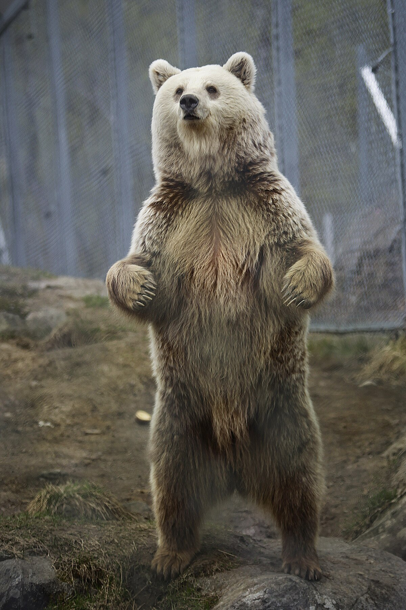

Pericole Comune în timpul drumețiilor:
Drumețiile în natură sunt activități pline de satisfacții, dar este important să fii conștient de posibilele pericole și să iei măsuri pentru a le evita sau a le gestiona în cazul în care apar.
- Vreme schimbătoare: Condițiile meteorologice pot evolua rapid în zonele montane sau în alte medii naturale. Pregătește-te pentru schimbările de temperatură, ploaie sau furtuni neașteptate. Întotdeauna consultă prognoza meteorologică înainte de plecare.
- Lipsa apei potabile: Asigură-te că ai suficientă apă la tine și că știi cum să o purifici dacă este necesar. Deshidratarea poate fi o amenințare serioasă.
- Orientare dificilă: Pierderea orientării în natură poate fi periculoasă. Folosește hărți, busole și alte instrumente de navigație. Dacă folosești tehnologie, asigură-te că ai baterii suficiente și că știi cum să utilizezi echipamentul.
- Faună sălbatică: În unele zone, întâlnirea cu animale sălbatice poate fi o amenințare. Informează-te despre speciile din zonă și cum să te comporti în prezența lor. Evită hrănirea animalelor sălbatice și păstrează o distanță sigură.
- Teritorii izolate: Drumețiile în locuri izolate pot aduce dificultăți în obținerea ajutorului în caz de urgență. Asigură-te că ai un plan de comunicare și că cineva știe ruta ta și aproximativ când să te aștepte înapoi.
- Echipament inadecvat: Alege echipamentul potrivit pentru tipul de drumeție pe care o faci. Asta include încălțăminte adecvată, haine potrivite condițiilor meteorologice, echipament de siguranță (cum ar fi cască sau ham de siguranță în cazul escaladării) etc.
- Dezechilibre sau accidente: Pot apărea accidente neașteptate, cum ar fi căderi sau alunecări. Fii atent la teren, utilizează echipament de siguranță și evită riscurile inutile.
Este important să fii pregătit și să respecți mediul înconjurător pentru a-ți asigura siguranța în timpul drumețiilor. Dacă mergi în zone mai izolate sau dificile, este recomandat să ai cunoștințe solide despre siguranța în aer liber și, eventual, să te pregătești cu un ghid sau un partener de drumeție.